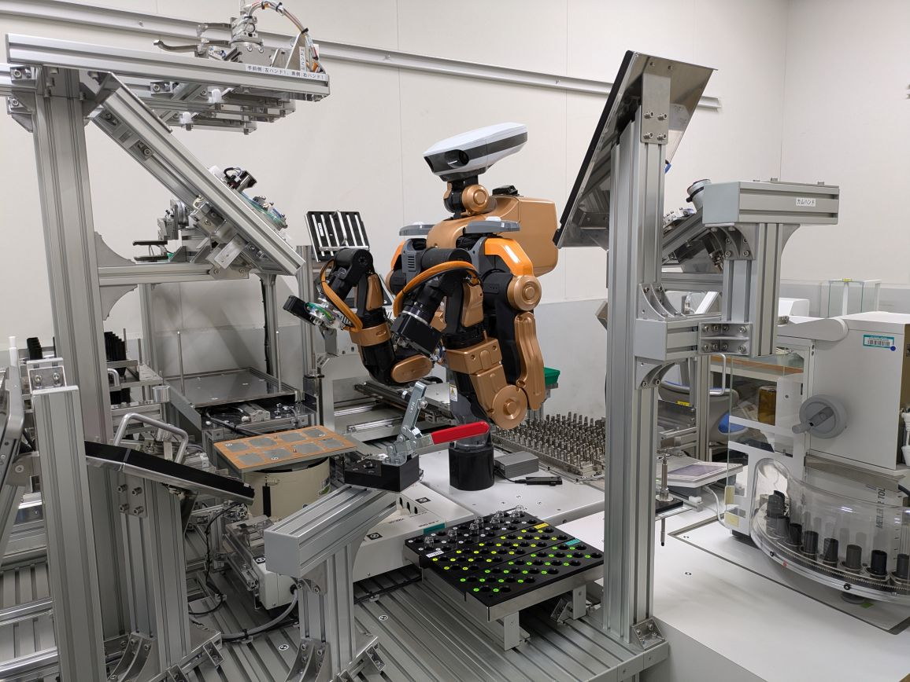

BL14B2 XAFS測定試料調整自動化システムは、透過XAFS測定用ペレット試料の作成を効率良く行うために、作業工程のうち(1)窒化ホウ素の分注、(2)試料と窒化ホウ素の攪 拌、(3)ペレット化の作業を自動で連続的に行えるようヒト型ロボットを活用したものです。ユーザーがペレット成型に必要な試料を予め粉砕、定量 し、容器に入れたものを本システムに準備することでペレット試料最大60個を約5時間で成型することができます。本シス テムにはペレット成型時の 各操作の制御及び連携にヒト型ロボット「NEXTAGE」を活用してます。また、成型完了後、カートリッジにセットされた試料はそのまま BL14B2の試料自動交換システム(Humming Bird)にて測定が可能です。

2024/10/7
測定例を掲載しました
2024/9/13
BL14B2 XAFS測定試料調整自動化システムのサイトを作成しました
※本
システムの使用を希望される方は、マニュアル(左メニューのリンク先)を必ずお読みください。
Ofuchi, H. & Honma, T (2021). SPring-8/SACLA Annual Report FY2021, 41-43.
（注）e-mailアドレスは＠マーク以下を省略していますので、
アカウントの後に@spring8.or.jpを付けてください。
大渕 博宣
公益財団法人 高輝度光科学研究センター（JASRI）
〒679-5198 兵庫県佐用郡佐用町光都1丁目1-1
Phone : 0791-58-0832
FAX : 0791-58-0830
e-mail : ofuchi